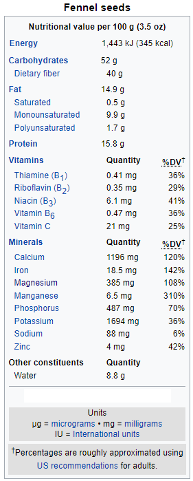

Wiki-Plant
Fennel
Gastrointestinal Health, Bloating
Fennel
 Additional InfoCommon name: Fennel.
Scientific plant name: Foeniculum vulgare Mill.
Origin: It is indigenous to the shores of the Mediterranean but has become widely naturalized in many parts of the world, especially on dry soils near the sea-coast and on riverbanks.
Harvest season: It is an autumn-flowering perennial. Harvest herb fennel through late spring and early autumn. plant.
Production: India leads the world in fennel cultivation, followed by China, Syria and Mexico. Most US-grown Florence fennel comes from California and Arizona.
Health benefits: In herbal medicine, fennel is used a remedy for menstrual pain, coughs, to strengthen eyesight and for stomach pain.
History of plant usage and discovery: Fennel was prized by the ancient Greeks and Romans who used it as medicine, food, and insect repellent. A fennel tea was believed to give courage to the warriors prior to battle. According to Greek mythology, Prometheus used a giant stalk of fennel to carry fire from Mount Olympus to Earth. Emperor Charlemagne required the cultivation of fennel on all imperial farms. Pliny The Elder, the ancient Roman author famous for his sweeping encyclopedia, “Natural History,” mentions fennel numerous times as a treatment for stomachache, to care for the “stings of serpents,” for uterus health and as a treatment for a bunch of other ancient Roman maladies.